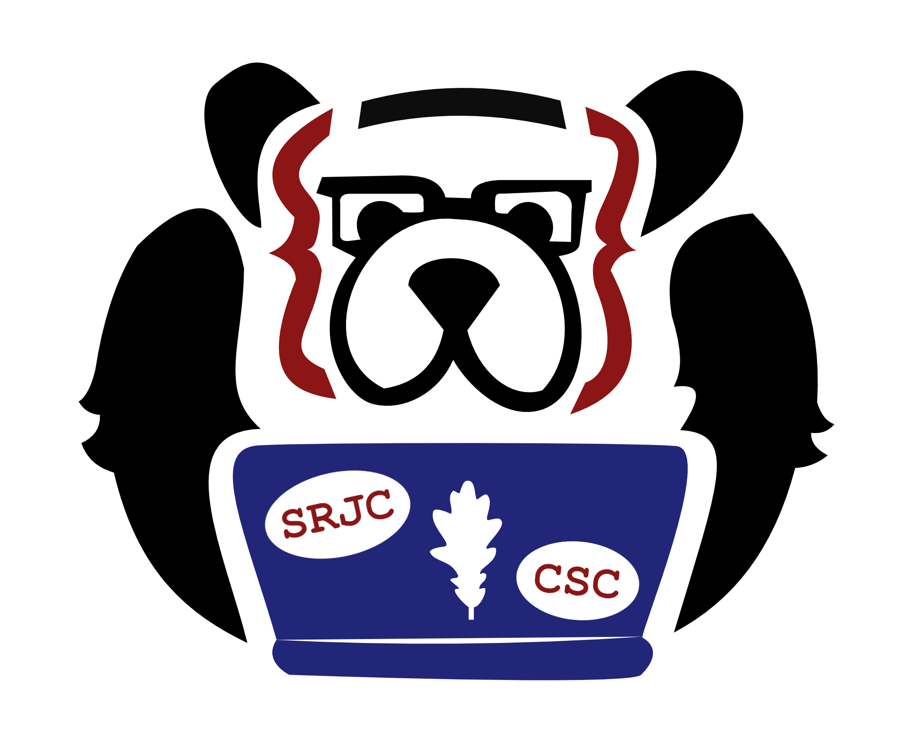

 SRJC CSC
About the Computer Science Club
We are the computer science club at SRJC. The SRJC CSC is a place for coders and computer enthusiasts of all skill levels; anyone with an interest in computers is welcome. Club activities include collaborative projects (web development, game development, robotics, etc...), computer programming conferences and events (North Bay Python, Hackathons), guest speakers and help with programming assignments. Club members are also encouraged to bring their own ideas and interests to the club. Feel free to stop by and share your own projects, or any project ideas you've always wanted to bring to life!